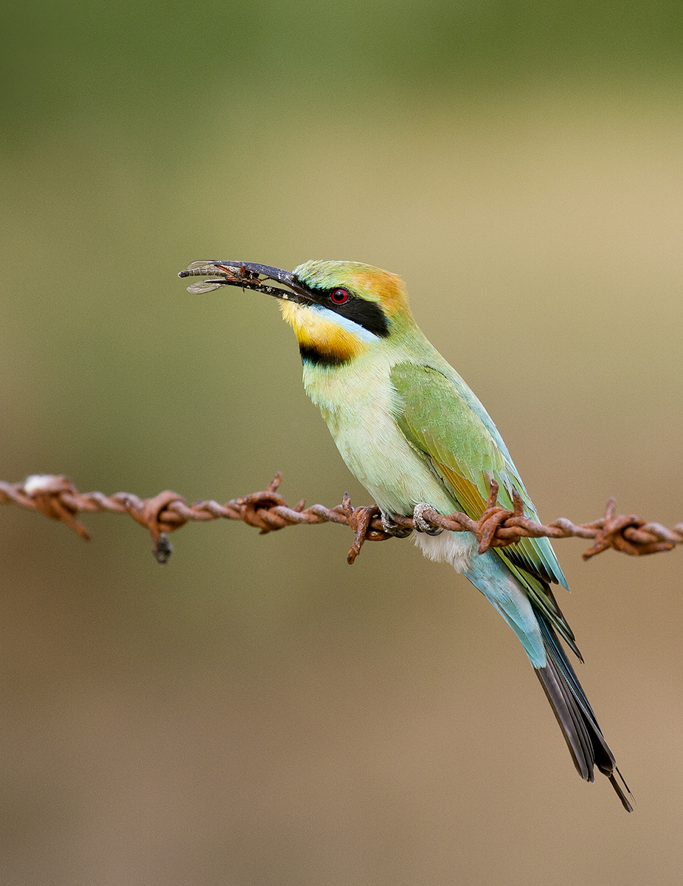
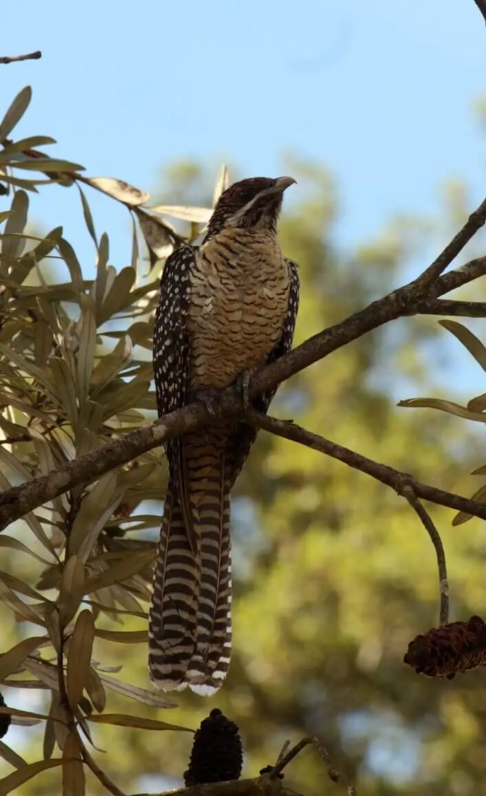
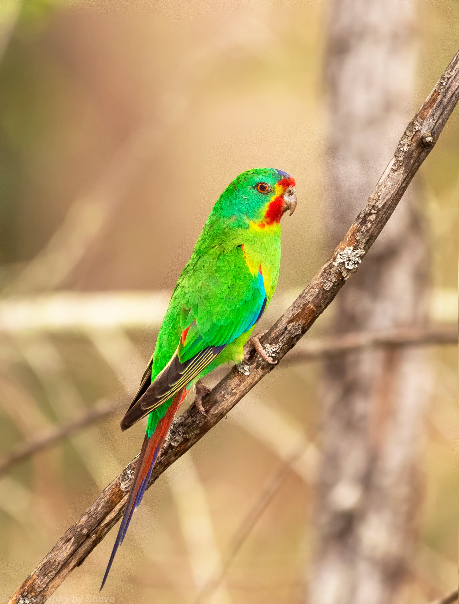
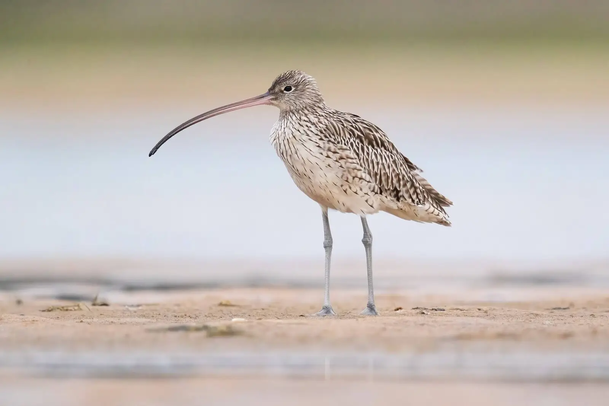
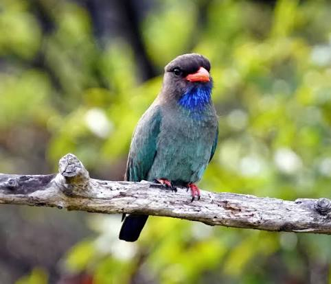
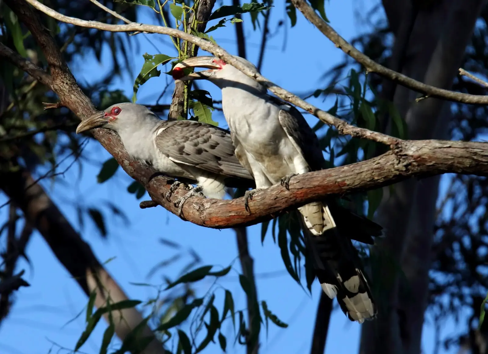
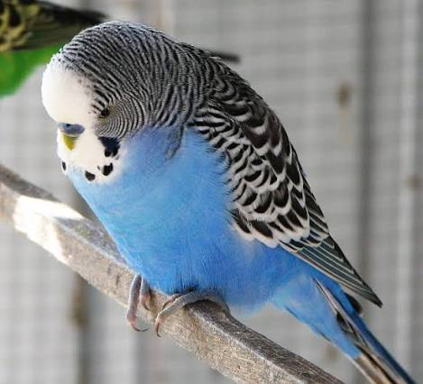
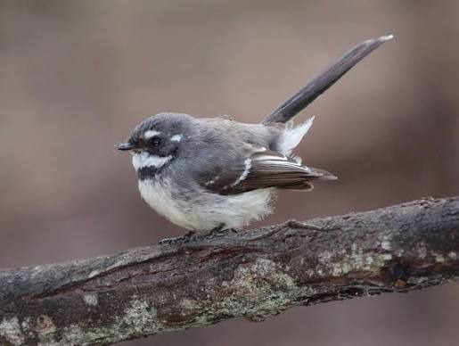

Explore bird sightings across Australia. Discover where birds are recorded, how sightings vary across regions and habitats, and how patterns change across seasons and years.
Discover eight Australian bird species featured in this dashboard.

Merops ornatus

Eudynamys orientalis

Lathamus discolor

Numenius madagascariensis

Eurystomus orientalis

Scythrops novaehollandiae

Melopsittacus undulatus

Rhipidura albiscapa
Hover over the map to explore bird sightings across Australia.
Compare
total sightings with
sightings per person
across states and territories.
Select a measure to explore recorded bird sightings.
Scale: Colours represent total bird sightings across states and territories. Use the legend to compare sighting totals, shown in millions.
Threshold scale: Colours represent ranges of sightings per person. A higher value means more recorded sightings relative to population, not more birds per person.
Explore the locations with the most recorded sightings for the selected bird. Each circle represents a one-degree grid square, roughly 110 km from north to south. Larger circles represent more records.
Hover over a circle to reveal its location and sighting count. Use the bird selector to compare hotspot patterns across species.
These rankings reflect recorded sightings in each grid square, not the number of individual birds living there.
Explore elevation and coastal distance using a sample of 3,000 sightings per bird.
Explore bird sightings across Australia's coastal, elevated and inland landscapes. Compare species to discover differences in their geographic distributions.
The left map shows elevation above sea level, while the right shows proximity to the coast. Pink dots indicate recorded sightings of the selected bird.
Each bar represents 100% of a bird's recorded sightings, divided into elevation bands that use the same colours as the map. Birds are sorted from lowest to highest elevation.
Key insights: Most species are recorded at low elevations, while Budgerigars stand out for their inland distribution. From the sample, nearly all Eastern Curlew sightings occur below 100 m.
The dot marks the median distance from the coast, while the bar shows the middle 50% of sightings. The square-root scale makes distances near the coast easier to compare, so equal gaps do not represent equal distances.
Key insights: Most species have a median distance of less than 50 km from the coast. Budgerigars stand out, with a median distance of about 540 km inland, consistent with their inland distribution.
Birds are not reported evenly through the year. Compare when each species is most often recorded and how its seasonal patterns change between years.
Each shape shows how one bird's sightings are spread across the twelve months. Higher parts mean a larger share of that bird's annual sightings fall in that month, and the label marks its busiest month. Compare the timing of the peaks rather than the heights between birds.
Key insights: Eastern Curlew and Dollarbird peak in January, Channel-billed Cuckoo in October and Eastern Koel in November. Swift Parrot peaks in autumn (May) and Budgerigar in winter (August), while Grey Fantail sightings are spread fairly evenly across the year.
Each square is one month of one year for the bird chosen in the dropdown. Darker squares mean more sightings, and the outlined square marks each year's busiest month. Read across a row to see a year's seasonal pattern, and down a column to see whether a month is busy year after year.
Key insights: Select a bird to explore its seasonal sighting patterns.
Continuous legend: Colour intensity represents sightings within the selected bird. The colour scale adjusts to each bird's sighting counts, so the maximum varies between species.
Use the bird selectors to choose multiple species and
compare their sighting trends over time.
Recorded sightings of the leading bird species generally increased
between 2019 and 2024. The Grey Fantail remained the most
frequently recorded species out of the 8 birds throughout, with
sightings rising from around 65,442 in 2019 to 104,485 in 2025.
However, sightings declined across all eight birds in 2025,
following several years of growth.
Logarithmic scale: The vertical axis uses a logarithmic scale, allowing bird species with both smaller and larger sighting counts to be compared more easily. Equal distances represent proportional changes rather than equal increases in sightings.
Explore how the locations of recorded sightings change throughout the year. Select a bird in the map's dropdown, then move the slider to step through the months.
Regional focus: Queensland.
Explore how the locations of recorded sightings change throughout the year.
Reading the map:
The path joins the average location of the bird's sightings in
each month, labelled from January to December. The highlighted
marker shows the month chosen on the slider.
Sightings show where people report birds, so shifts in the path may reflect where people are watching as well as where birds are.
Each line follows one bird's rank among the ten most reported
birds in Australia, year by year from 2019 to 2025. A line at the
top means the bird was reported more than any other species that
year. Select a bird in the dropdown to highlight its path.
The Australian Magpie ranks first in every year. The Rainbow Lorikeet finishes 2025 in second place, ahead of the Magpie-lark, while the order further down the chart changes more from year to year.
Rankings are based on recorded sightings, so they reflect how often people report each bird as well as how common it is.
Each bar is one bird's recorded sightings in the chosen year, sorted from most to fewest. Change the year to see how the order and the gaps shift. The bird selected in the rankings dropdown above is also highlighted here.
Each dot shows the percentage change in a bird's recorded sightings from 2019 to 2025. Dots further to the right indicate larger increases. Only birds ranked in the top ten in both years are shown. Hover over a dot to see actual counts, as percentage can exaggerate changes for birds with fewer initial sightings.
FIT3179 Data Visualisation 2 Assignment by Chloe Tang. Last updated 24 October 2026.